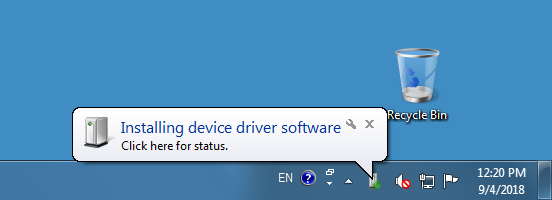
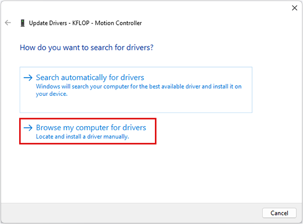
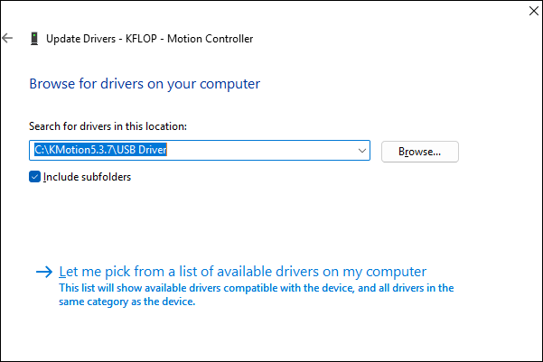
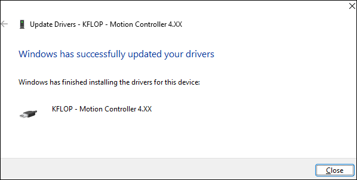
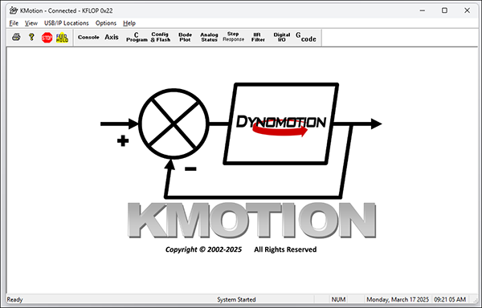
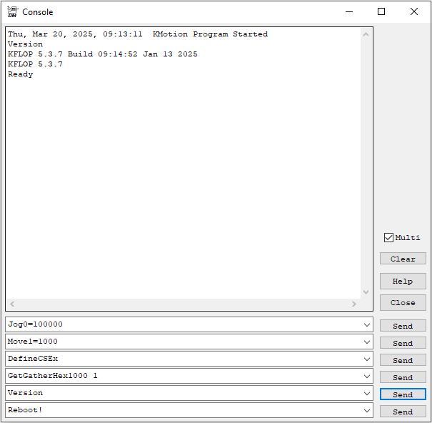
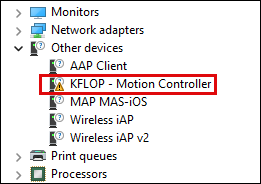
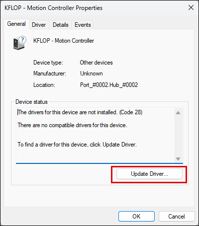
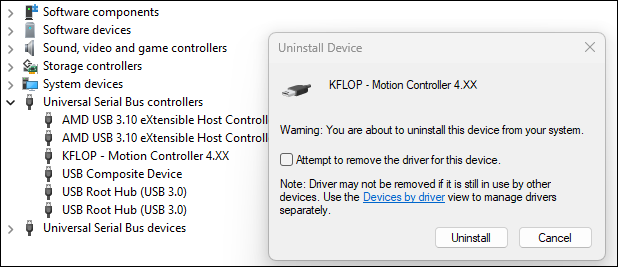

KFLOP QuickStart
Remove the KFLOP board from the anti-static packaging in a static safe environment.
Note: Immediately before touching any electronic component, always discharge any static electricity you may have by touching an earth ground, such as the metal chassis of a PC.
KFLOP may operate powered from the USB by inserting J3. Total power must be < 0.5A for USB powered operation. Otherwise remove J3 and connect a +5V power supply to the KFLOP 4 pin Molex connector. If using an ATX supply see here.
Connect the USB or turn on the +5V supply. Two green LEDs should blink rapidly for a few seconds (KFLOP is checking if the Host is requesting a Flash Recovery during this time), and then the LEDs should remain steady. Now connect a USB cable from KFLOP to your PC and follow the USB Driver instructions below.
Please download and install the latest software from: http://dynomotion.com/Software/Download.html. The installation will create a Windows™ Start button link to further help and to the KMotion Setup and Tuning Application.
Table of Contents:
- USB Installation
- When "Installing device driver software" prompt does not appear
- Removing USB Drivers
- Windows 11
- Using an ATX PC Power Supply
USB Installation
- The first time the KFLOP board is connected to a computer's USB port this message should be displayed near the Windows™ Task Bar:

Shortly thereafter, the New Hardware Wizard Should appear.
- Select "Browse for drivers on your computer":

If you haven't already, download and install the complete KFLOP Software including drivers available at: http://dynomotion.com/Software/Download.html - Browse to within the subdirectory where you selected the KFLOP Software to be installed to the "USB DRIVER" subdirectory. If the software was installed into the default subdirectory, the location would be: C:\KMotion4xx\USB DRIVER.
Note: Regardless of whether you are using a 32-bit or 64-bit Windows, DO NOT browse to any sub-folder!

- If successful, the following screen should appear. Click "Close":

- The KFLOP board is now ready for use. To verify proper USB connection to the KFLOP board, use the Windows™ Start Button to launch the KMotion Application:

- At the main tool bar select the "Console" button to Display the Console Screen. Enter the "Version" command and press "Send". An output message will appear indicating successful communication between the PC and KFLOP:

When "Installing device driver software" prompt does not appear
If the Windows™ message “Installing device driver software” does not automatically appear when connecting the USB to KFLOP, some driver selection might already have been made. In this case follow the steps below. Go to the Device Manager and right-mouse-click on "KFLOP – Motion Controller" under "Other devices" and select "Update Driver Software":

On the next screen click "Update driver" and follow the steps described above in Step 3:

Removing USB Drivers
If you need to uninstall the USB driver, find KFLOP in the Device Manager and right-mouse-click "Uninstall". On the next screen, select the checkbox next to "Attempt to remove the driver for this device":

Windows 11
Some Windows 11 users might get a message that the driver is corrupted. In this case, Memory Integrity needs to be turned off. To turn off Memory Integrity in Windows 11, navigate to Windows Security, then Device security, click on Core isolation details, and toggle the Memory integrity switch to "Off".
Here's a more detailed guide:
- Open Windows Security: Click the Start button, type "Windows Security", and select it from the results.
- Navigate to Device Security: In the left pane, click on "Device security".
- Access Core Isolation Details: On the right side, under "Core isolation", click on "Core isolation details".
- Toggle Memory Integrity: Find the toggle for "Memory integrity" and switch it to "Off".
- Restart your device: You may need to restart your device for the changes to take effect.
Using an ATX PC Power Supply
The KFLOP 4 pin Molex connector is the same Pinout as a PC Disk Drive power connector. The +12V is not required for operation, it is routed internally through the board to several of the connectors. See the on-line help section titled Hardware/Connector Description for more information.
Note: KFLOP may at times draw as little as 0.25 Amps from the +5V supply. Some PC power supplies will not function without a minimum load. In these cases an appropriate power resistor (~10 ohm 5 Watt) should be added across the +5V. Additionally, most ATX power supplies require pins 14 and 15 on the main 20 pin power connector to be shorted.
Note: It is NOT recommended to use the same power supply that is powering your PC and Hard drives to power the KFLOP. Motor noise and power surges have the possibility to cause damage or loss of data within the PC.